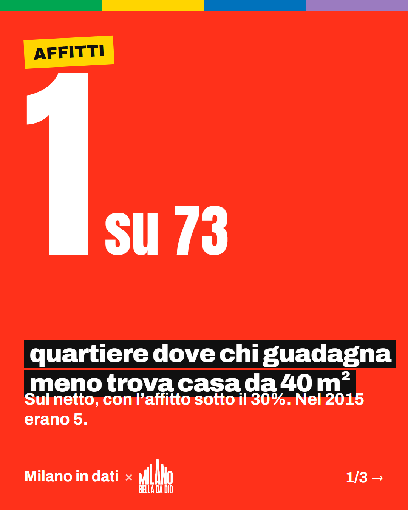
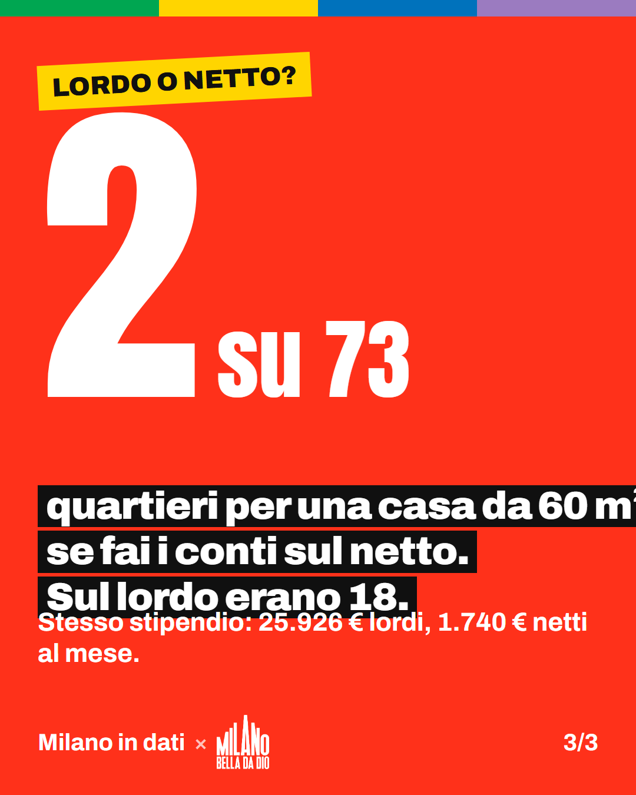

Post casa: tre copertine
Anteprima, non pubblicata su Instagram. Numeri della pagina Chi può permettersi dove, sul netto, 2024.
1 · Chi guadagna meno: 1 su 73

2 · Da solo in 60 m²: 2 su 73
3 · Lordo contro netto: 18 → 2

Anteprima, non pubblicata su Instagram. Numeri della pagina Chi può permettersi dove, sul netto, 2024.

